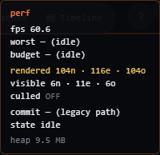
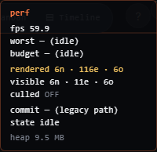
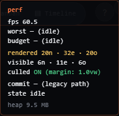

מה נבנה, מה ה-HUD החדש חושף, ולמה ה-tile cache לא הזיז את המחט. 30 במאי 2026.
ה-tile cache מ-Sprint 4 לא שינה כלום ב-perf על ה-iPad. ה-worst נשאר ~212ms, ה-FPS נשאר ~5.5. זה לא כישלון של הקוד — זאת האבחנה עצמה: אם העברת את ה-dot-grid ואת מילוי האזורים החוצה מה-SVG, וכלום לא זז — אז הם מעולם לא היו הצוואר.
הצוואר הוא מספר האלמנטים שמצוירים בכל frame. בניתי שורת rendered מול שורת visible ב-HUD כדי שזה יהיה גלוי בלי console — וזה כבר חשף משהו שה-brief לא ידע (סעיף 2).
הדוח של Sprint 4 טען "Phase 4 נבנה, ממתין לאימות". הוא אכן נבנה — אבל הוא טיפל ב-dot-grid וב-zone fills, ואלה לא מה שתוקע את ה-pan. אני אומר את זה ישירות: ה-tile cache לא תרם דבר ל-FPS.
הוא נשאר בקוד — לא קורעים אותו החוצה — כי הוא הארכיטקטורה הנכונה למצע (substrate) ומתחבר יפה לקיפול. אבל הוא לא הפתרון לבעיית ה-pan על קנבס צפוף. הפתרון הוא Sprint 4.1.
הוספתי שלוש שורות ל-perf HUD: rendered (כמה אלמנטים באמת מורכבים ב-DOM כרגע — העלות האמיתית), visible (כמה נמצאים בתוך מלבן הצפייה), ו-culled (OFF / ON (margin: 1.0vw)). צילמתי שלושה מצבים על קנבס סינתטי בן 104 צמתים + 116 קשתות, פרוס רחב, ב-100% זום (כך שרוב הצמתים מחוץ למסך):



ה-brief הניח שכל הצמתים מצוירים תמיד. על ה-desktop זה לא נכון: כבר קיים קיפול-צמתים ישן (rbush, מ-Phase 1.6) שנדלק ב-100+ צמתים. לכן בעמודה ב' רואים rendered 6 צמתים, לא 104 — הצמתים (וה-overlays שלהם) כבר היו מקופלים.
מה ש-rbush מעולם לא קיפל: קשתות. 116 קשתות מורכבות מול 11 נראות — שם הפער האמיתי על ה-desktop. בנוסף, rbush בונה את העץ מחדש בכל frame (טעינת 104 פריטים כל 16ms) — עלות בפני עצמה בזמן pan.
| מצב | rendered | visible | סה"כ מורכב | אבחנה |
|---|---|---|---|---|
| א. ההנחה של ה-brief (ללא rbush) | 104n·116e·104o | 6n·11e·6o | 324 | הכול מצויר — הפער המלא |
| ב. desktop אמיתי (rbush) | 6n·116e·6o | 6n·11e·6o | 128 | צמתים מקופלים, קשתות לא |
| ג. cull-v1 ON | 20n·32e·20o | 6n·11e·6o | 72 | צמתים + קשתות + overlay LoD |
ה-HUD יגיד לך באיזה מצב ה-iPad נמצא, בלי לנחש: אם בשורת rendered אתה רואה ~104 צמתים כש-cull כבוי → ה-rbush לא רץ אצלך (וה-brief צדק, כלום לא קופל). אם אתה רואה ~12 → ה-rbush כן קיפל, והעלות שנשארה היא קשתות + בנייה-מחדש כל frame + שכבות ה-overlay בזום-אאוט. בכל מקרה, cull-v1 מטפל בכל שלושת אלה.
צמתים, קשתות, ו-overlays — רק מי שבתוך ויו-פורט + מרג'ין נכנס בכלל ל-innerHTML. קיפול אמיתי (unmount), לא display:none (ש-iOS עדיין משלם עליו שכבה ו-paint). הקשתות ירדו 116→32 — מה ש-rbush אף פעם לא נתן.
לכן הוא מרכיב 20 צמתים במקום ה-6 ש-rbush הרכיב — קצת יותר, אבל בלי בנייה-מחדש כל frame. הסריקה מוגבלת ל-פעם אחת ל-~100ms בזמן pan פעיל, ופעם אחת בנחיתה. אף פעם לא בתוך touchmove. flick מהיר של עד מסך שלם בין סריקות לא חושף אזור ריק.
כל .nslice overlay הוא שכבת compositor אחת ב-iOS. בקנבס צפוף בזום-אאוט יש ~100 כאלה במסך — הפיצוץ ש-Safari לא יכול לאצור. מתחת ל-0.5×, cull-v1 לא טוען overlays בכלל; הצורות עוברות לשכבת ה-#cv ה-SVG היחידה (כ-.node-lod). 100 שכבות → שכבה אחת.
צומת נבחר + הידיות שלו, צומת בגרירה, נקודת-הקצה של קשת בציור, ויעד ניווט "מרכז על צומת" מהמגירה (מורכב לפני אנימציית המצלמה, כך שהוא כבר שם בנחיתה — אין frame ריק). קבוצת multi-select נכנסת דרך ה-selSet.
sprint4_1_fixup.spec.ts — 12 בדיקות עוברות על desktop-chrome וגם ipad-chrome: מתמטיקת הקיפול (צומת חוץ-מסך יוצא, חריג-keep נשאר, קשת חוצת-מסך עם שני קצוות בחוץ נשארת), mount/unmount ב-DOM, overlay LoD מתחת ל-0.5×, ומסלול ה-rollback (flag כבוי → הכול מורכב).
החבילה המלאה עברה: 612 בדיקות (306 לכל מנוע) — אפס כשלים. כולל ה-12 החדשות + כל הרגרסיה הקיימת (Sprint 4 וכל מה שלפניו). מסלול ה-rollback מאומת — flag כבוי = התנהגות זהה.
אם בדיקת Issue 2 מראה שה-pan עדיין תקוע בזום-אאוט מלא — אז שכבת ה-SVG לא מקודמת ל-GPU, וצריך לוודא will-change:transform על שלושת המכולות (לא פר-צומת). זה מותנה בתוצאה שלך; לא נגעתי בו עד שתדווח.
הכל מאחורי --cull-v1 (כבוי כברירת מחדל). המנגנון במקום ונמדד. אני לא טוען ניצחון perf בלי ה-iPad — שער ההחלטה של Phase 4 הוא: האם Algo Execution עושה pan ב-≥50 FPS עם cull-v1 ON. תריץ את ארבעת הצעדים, דווח את המספרים, ונחליט מכאן. לא מתחיל Sprint 5 / Bets.
הערה: הצילומים כאן הם desktop (אילוסטרציה של המנגנון). המספרים שלך מה-iPad הם שקובעים.